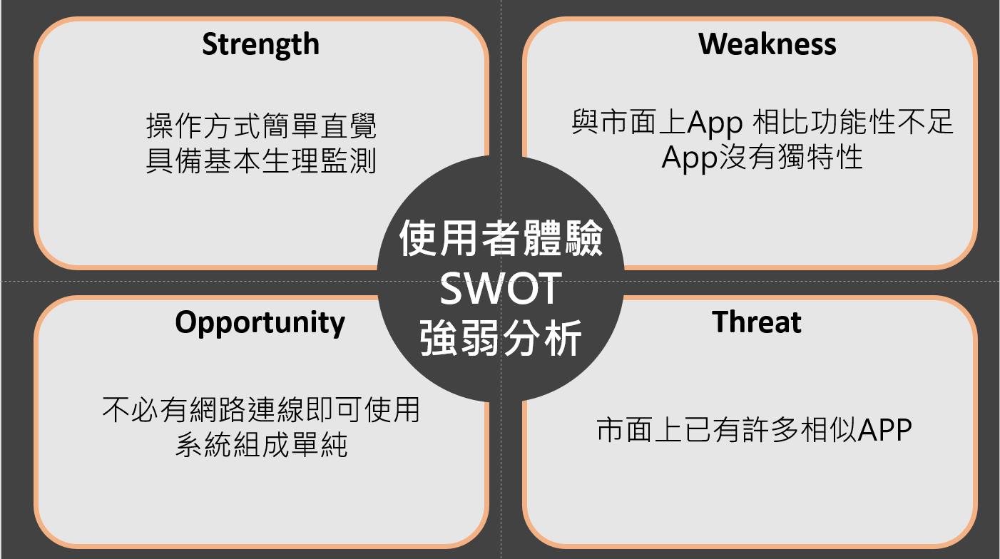

醫學測量及儀表(109-2)第A9組 學期報告第 四 次討論會議紀錄
時間：2021年4月21日18:00~19:00 地點：線上討論
主席：陳瑜婷 記錄審訂：洪子婷
出席：10625139 陳瑜婷 10625156 洪子婷 10625256 杜品靜 10844105 陳依廷
主題：藍芽傳輸耳溫槍
Ⅰ.進度報告: 討論如何製作網頁及app優缺點
Ⅱ.討論事項:
1.討論各自完成的部分
2.下次當面討論時間及地點
Ⅲ.討論內容:
品靜:我們要不要找一天約在學校討論如何製作？
子婷:好啊 這樣進度也會比較快
子婷:那就約5/12下午大家可以嗎
依廷:好，沒問題。
品靜:可以先想想我們的儀器外觀要設計怎樣
子婷:好啊那我們要訂一個時間交這些作業
依廷:可以！
品靜:我覺得app分析優勢的部分是跟一般耳溫槍不同的地方是可以傳輸紀錄數
值，但在紀錄數值上無法直接從數值上看出數值的來源（是誰的體溫），這個
應該可以放在未來有機會新增的功能上，就是可以增加連結讀卡機系統之類可
以登入量測者的資料，建立資料庫系統之類的
依廷:這是我目前打的，因為我不確定怎麼打，如果有需要改可以再告訴我

瑜婷:我覺得品靜的想法還不錯，可以增加登入測量者的資料
子婷:或者是像現在很多app都可以連線跟家人朋友們一起共用，可以觀察到彼
此的健康狀況
依廷:好 那我們下次當面討論的時候大家可以多提出自己的想法！目前大家分
配的進度都還ok嗎？
瑜婷:可以
品靜:那我們12號討論的時候大家要把自己做好的東西先傳上來，當天比較討論
子婷:好 這樣討論也比較有效率！
依廷:那今天就先這樣 大家要記得再找些資料喔
品靜:好
Ⅳ.決議事項:
1. 設計資料下次討論，並整理自己做的資料
2. 下次會議前先把資料統整好